Am 28.04.2019 starten wir zwei reisetechnisch noch eher unerfahrene «Bünzlischweizer» in unser Madagaskar Abenteuer
Die Ankunft in Antananarivo verläuft einwandfrei, nicht zuletzt dank der tollen Beschreibungen in den vom PRIORI-Team erhaltenen Dokumenten. Nach der Gepäckabholung vom Gepäckband (es ist alles angekommen) und dem Bargeldwechsel finden wir unseren Fahrer Adolphe schnell. Sein Lächeln sticht aus der Menge heraus und auch die PRIORI-Aufkleber helfen dabei. Die Landung im fernen Madagaskar erfolgt definitiv sanft.
Am Morgen verlassen wir die Hauptstadt früh und haben eine lange Fahrt vor uns, da wir tags darauf den Zug erwischen müssen. Leider kommen wir daher erst spät abends und nur kurz in den Genuss des Lac Hotels. Auf der Zugfahrt nach Manakara sammeln wir spannende Eindrücke von Bergregenwald und all den geschäftigen Madagassen, die dort leben. Auch wenn sich die Zugfahrt (im Übrigen im welschschweizer Zugwaggon) in die Länge zieht, so ist sie doch eines der Highlights unserer Reise.

Ankunft des Zuges in Sahambavy
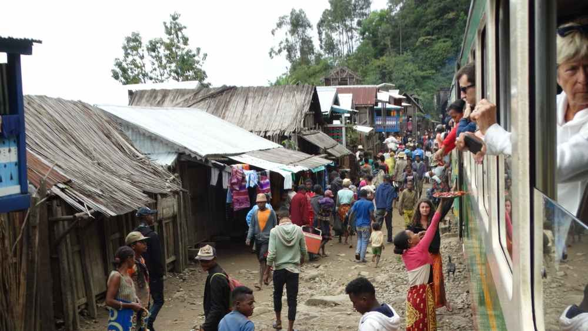
Zugfahren ganz ohne Pendler und sogar mit Verpflegung 😊
In Manakara wartet bereits das nächste Highlight. Die Pirogenfahrt durch den Kanal von Pangalanes ist traumhaft
Auf dem Fluss gesäumt von Elefantenohren und vom Baum der Reisenden und mit dem Geräusch des Paddelns fühlen wir uns wie auf einem anderen Planeten. Das Highlight im Highlight ist aber das Mittagessen. Ein kleiner Tisch und zwei Stühle werden gekonnt aufs Boot gehievt und zur Küste gebracht. Auf offenem Feuer wird der morgens abgeholte, frische Fang der Fischer grilliert und mit weiteren Köstlichkeiten serviert. Wir sind baff und geniessen in der Stille andächtig das grandiose Essen.
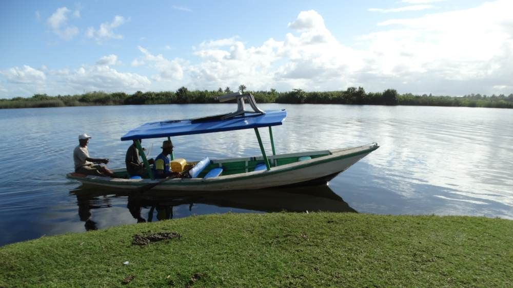
Ein Picknick am Ufer des Pangalanes-Kanals
…und wir entwickeln eine grosse Liebe für die kleinen Pirogen.
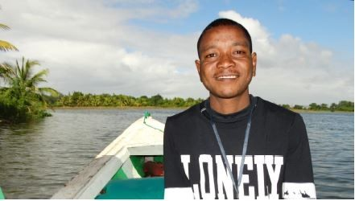
Unser Guide auf dem Pangalanes-Kanal
Auch ja, unser Guide an diesem Tag legt viel Wert darauf, dass wir ein Foto von ihm machen und es dem PRIORI-Team zukommen lassen, er meint dass er Sie kenne und lässt sie grüssen, dem wollen wir natürlich gerne nachkommen:
Farafangana, die anfangs so unbekannte Stadt, die sich für uns schon bald wie ein zu Hause anfühlt, darf in den Highlights halt eben auch nicht fehlen.
Nirgends haben wir uns auf den Strassen so sicher gefühlt wie hier, auch wenn wir teilweise etwas überfordert waren mit den karnevalartigen Propagandafesten, die uns aber sehr faszinierten.
Hier möchten wir kurz erwähnen, dass Sie für uns das Hotel Cocombre Masque gebucht hatten. Unser Zimmer dort ist eher klein und dunkel, jedoch hat es alles was es braucht und die Betreiber sind wahnsinnig freundlich, was einem ein tolles Gefühl gibt (wir versuchen hier das erste Mal einen aromatisierten Rum).
Adolphe ist aber gar nicht zufrieden und will uns ein anderes Hotel zeigen, das Cocotiers. Da wir die Gepflogenheiten noch nicht genau kennen und Adolphe seine Mühen ein anderes Zimmer zu finden nicht umsonst sein lassen wollen, wechseln wir. Auch im Cocotiers sind wir sehr zufrieden, jedoch ist die Leitung eher unfreundlich, im Restaurant sind wir stets alleine, was uns nicht so gefällt und das Zimmer zwar sehr gross sowie komfortabel, jedoch hören wir in der Nacht immer wieder Tiere in den Wänden. Beide Hotels sind sicher gut, vom Charme her würden wir jedoch ein nächstes Mal eher wieder ins Cocombre Masque gehen. Zudem sind wir so in eine etwas doofe Lage geraten, was uns der Leitung des Cocombre Masque gegenüber etwas leid tut.
Was uns aber an der ganzen Reise mit Abstand am besten gefällt, fängt mit einer dreistündigen Bootsfahrt bei lautem Geratter und Geknatter an: die drei Tage in Tangainony
Dreistündige Bootsfahrt nach Tangainony
In Worten zu beschreiben, welche Gefühle wir dort erfahren durften, ist äusserst schwer. Die Offenheit der Menschen, die Güte, der Zusammenhalt, die Freude. Ein Mix der sich einprägt. An dieser Stelle möchten wir Herrn Stadelmann und auch Thierry und Tina von Herzen danken, dass Sie uns diese Möglichkeit gegeben haben eine solche kulturelle wie auch kulinarische Erfahrung machen zu können. Hier können wir nur Bilder sprechen lassen:
-
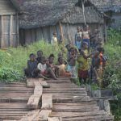
- Das Dorf Tangainony
-
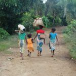
- Rundgang durch das Dorf
-
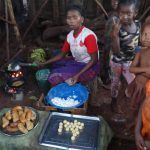
- Essenzubereitung im Dorf
Faszinierend ist, zuzusehen wie die beiden Männer das weisse, puderzuckerartige Pulver aus den kartoffelartigen Knollen gewinnen, indem sie die Knollen auf Steinen raffeln und den Brei anschliessend mehrere Male «auswaschen», um so das Gift aus der Knolle zu verdrängen. Ein riesen Aufwand, um am Morgen ein klebriges, nussiges Omelette zubereiten zu können, das aber sehr, sehr gut schmeckt:
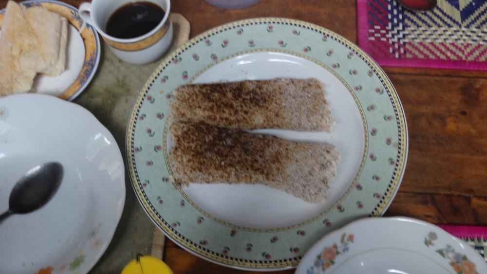
Aufwendig zubereitetes Omelette
Aber auch unterwegs zu den verschiedensten Reisezielen erleben wir immer wieder kleine Kuriositäten, welche uns begeistern:
Die Kuriositäten Madagaskars…
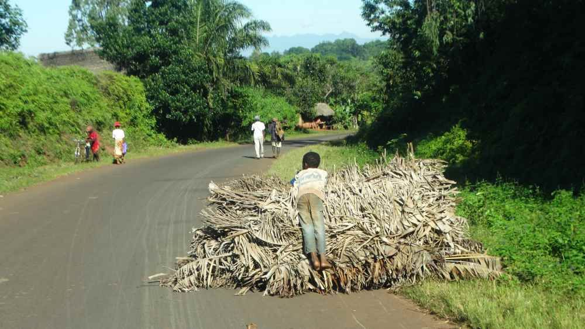
…und weiteres uns Unbekanntes!
Die einfallsreichen und vor Allem anstrengenden Transporte von diversen Sachen und…
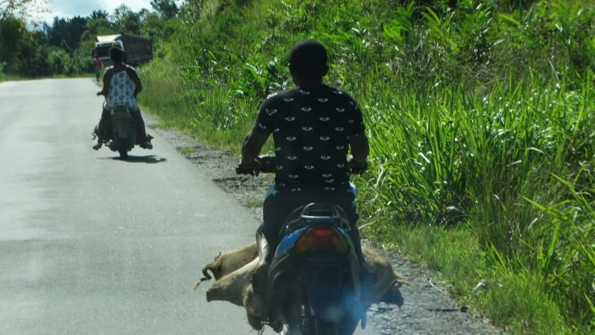
Besondere Transporte
…die Fähren, die eine so wunderbare Abwechslung zur langen Autofahrt bieten.
Typische Autofähre in Madagaskar
Mit Ausnahme von einer Fähre funktionieren alle einwandfrei. Bei einer Fähre werden wir informiert, dass diese auf der anderen Seite feststecke, weil die Batterie nicht funktioniere. Wir werden sogar gebeten unsere Autobatterie auszubauen, damit jene der Fähre wieder in Gang gebracht werden kann. Wir weigern uns und hoffen darauf, dass bald ein Auto die andere Seite des Flusses erreichen wird und dort weiterhelfen kann, ohne die Batterie aus dem Auto auszubauen und in einer Piroge über den Fluss schiffen zu müssen. Nach 40 Minuten Wartezeit, welche wir mit Gesprächen und später mit Tic-Tac-Toe überbrücken, kommt tatsächlich ein Auto von der anderen Seite und leistet der Fähre Starthilfe, sodass die Fahrt weitergehen kann.
Auch die Nationalstrasse an sich ist ein Highlight
Nationalstrasse mit Schlaglöchern und grossen Pfützen
Die zahlreichen Reisfelder überall sind wunderschön anzusehen. Die harte Arbeit dahinter jedoch ist das wirklich faszinierende. Die Handarbeit der Madagassen auf den Feldern ist erstaunlich.
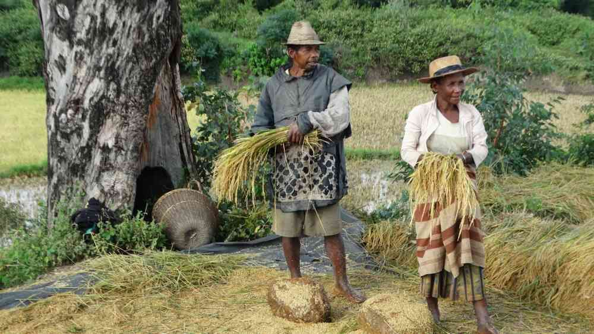
Reisfelder und Feldarbeit
Ab und zu müssen wir einem Chamäleon über die Strasse helfen.
Besondere Bekanntschaften entlang der Route
Die bunten Fruchtstände sind immer wieder schön zu sehen und wir können die ein oder andere Frucht essen, die wir noch nie gesehen haben.
Bunte Fruchtstände überall
In den Nationalparks, welche wir jeweils mit Freude betreten, dürfen wir ein weiteres Highlight erleben. Die vielen verschiedenen Lemuren sind lustige Gesellen
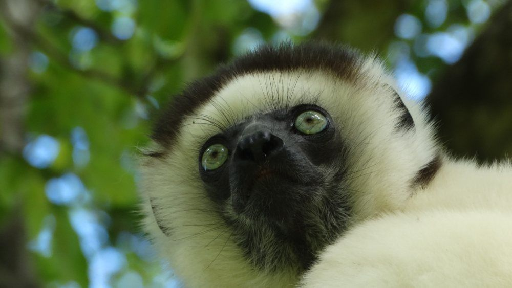
Lemuren in den Nationalparks
Ein Sonnenbad der etwas anderen Art 🙂
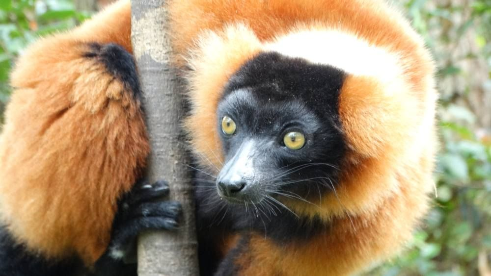
Neugierige Blicke von allen Seiten
Nach einer tollen Reise in den Süden Madagaskars fliegen wir zurück in die Hauptstadt Antananarivo, wo wir unseren zweiten Reisebegleiter, Percy kennenlernen dürfen. Auch mit ihm sind wir sehr zufrieden, er erklärt uns die spannendsten Sachen und hilft uns häufig beim Handeln für Früchte und weitere Köstlichkeiten. Was wir auch sehr schätzen, ist seine Mithilfe beim Wechseln von grossen Noten in kleinere. Wir hatten nicht bedacht, dass an vielen Orten nur kleinere Noten akzeptiert werden. Sein Mitdenken und die Hilfsbereitschaft sind grossartig!
Er bringt uns zur Ostküste, wo wir die Fähre nach Ste. Marie nehmen. Auch hier funktioniert der Transport einwandfrei. Wir sind allgemein erstaunt, wie wenig Probleme während der ganzen Reise auftreten, was sicherlich der guten Organisation von PRIORI zuzuschreiben ist.
Ste. Marie erleben wir als Paradies. Der Tipp von PRIORI, auch einen Abstecher nach Ile aux Nattes zu machen ist Gold wert und wirklich ein Paradies im Paradies
Bei einem Tagesausflug auf Ile aux Nattes machen wir eine Pirogenrundfahrt um die Insel und können dabei in den wunderschönen Riffen schnorcheln.
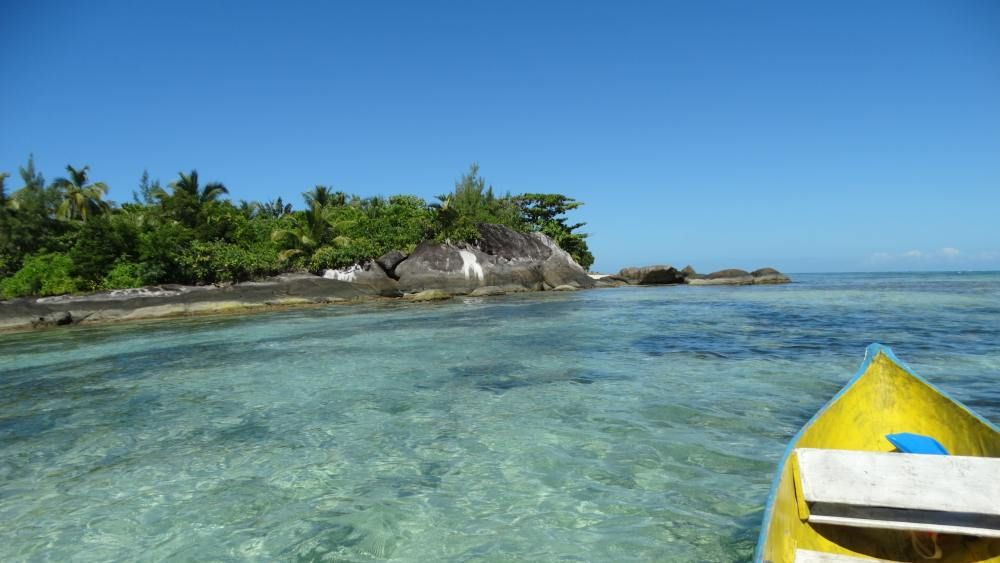
Mit der Piroge um das kleine Eiland Ile aux Nattes
Ein Sonnenuntergang zum Dahinschmelzen
Schon bald ist die Reise jedoch zu Ende
Bevor es nach Hause geht, dürfen wir in Tana (Kurzform von Antananarivo) aber noch an einem Kochkurs lernen, wie man ein typisch madagassisches Gericht zubereitet und wo man die Zutaten dazu einkauft. Mit einem Koch durch den Markt zu gehen und die Gepflogenheiten des Marktes zu erkunden ist eine tolle Erfahrung.
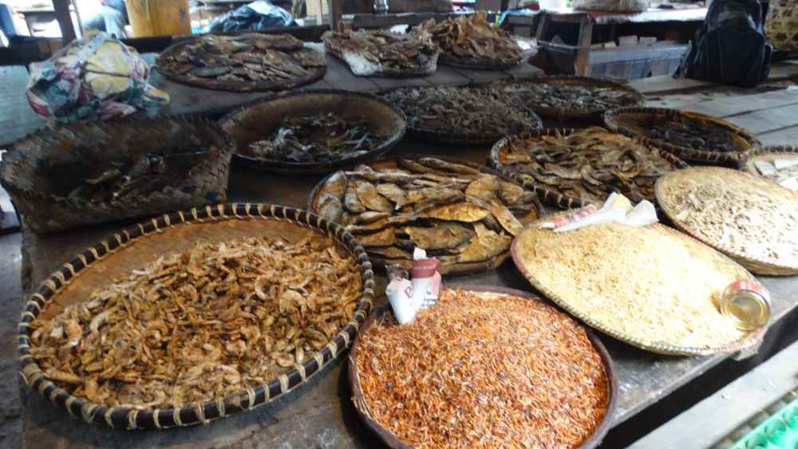
Auf dem Markt
Kochkurs und Rezept à la malagasy
Zusammengefasst:
Alles hat wunderbar funktioniert auf unserem Madagaskar Abenteuer, die Flüge, die Transporte, die wirklich professionellen Fahrer, die Kommunikation mit Ihrem Team und wie Sie auf unsere Wünsche eingegangen sind usw. Das Programm hat sehr gut zu uns gepasst und wir haben die Reise unglaublich geniessen können. Wir sind sehr froh, dass wir über PRIORI gebucht haben und würden es jederzeit weiterempfehlen (und haben es bereits). Ihre Idee von nachhaltigem Tourismus ist erstrebenswert und wir sind dankbar, dass Sie uns die Reise nach Madagaskar zu einem unglaublichen Erlebnis haben werden lassen.
Ein grosses und herzliches MERCI!
Liebe Grüsse“
Joël und Carmen